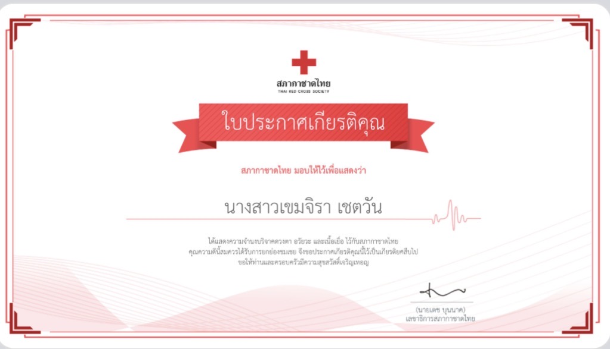
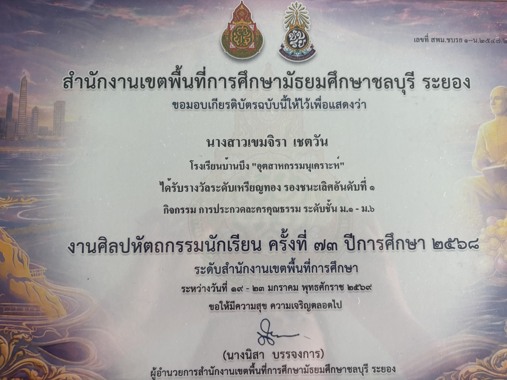
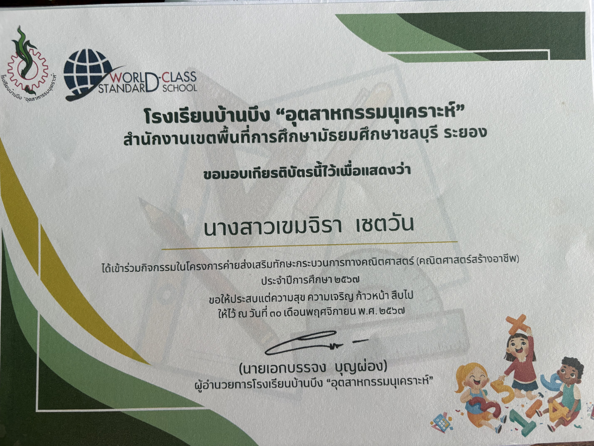
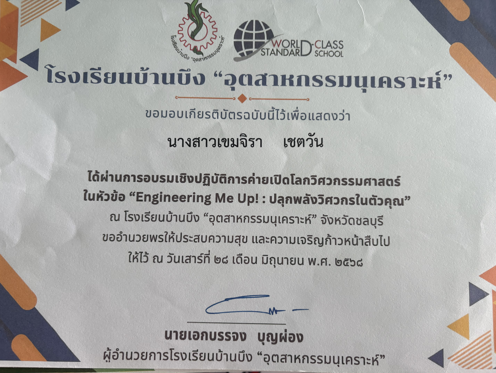
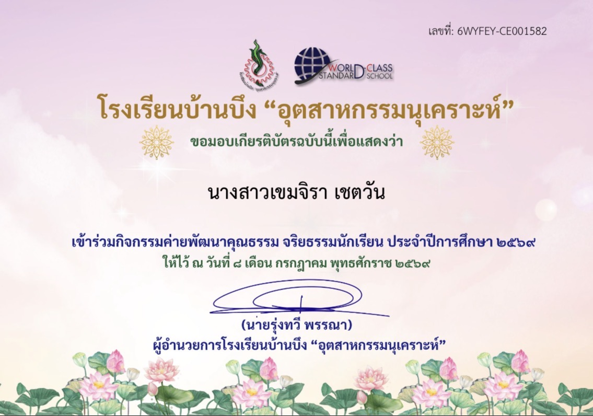

ผลงานที่ภูมิใจ
กิจกรรมและประสบการณ์ที่ช่วยพัฒนาความรู้ ทักษะการคิด การสื่อสาร การทำงานร่วมกับผู้อื่น และความรับผิดชอบ

วิทยากรจัดแสดงนิทรรศการวิทยาศาสตร์และเทคโนโลยี
ได้ถ่ายทอดความรู้ด้านวิทยาศาสตร์ และเทคโนโลยี ฝึกการสื่อสาร และการทำความเข้าใจเนื้อหา ซึ่งเป็นพื้นฐานสำคัญต่อการเรียนรู้ ด้านรังสีเทคนิค

Workshop KMITL Mini Startup Camp
เรียนรู้การคิดสร้างสรรค์ การพัฒนาแนวคิด การแก้ปัญหา และการทำงานร่วมกับผู้อื่น

การพัฒนาทักษะดิจิทัล
พัฒนาทักษะการใช้เทคโนโลยีดิจิทัล ซึ่งเป็นพื้นฐานสำหรับการเรียนรู้ และการประยุกต์ใช้เทคโนโลยี ทางการแพทย์

มหกรรมติวเข้ม TPAT 1-3-5
เตรียมความพร้อมด้านวิทยาศาสตร์ และการคิดวิเคราะห์ เพื่อเป็นพื้นฐานในการศึกษาต่อ สายวิทยาศาสตร์สุขภาพ และรังสีเทคนิค

กิจกรรมจิตสาธารณะ
ได้ตระหนักถึงคุณค่าของการช่วยเหลือ และดูแลผู้อื่น สะท้อนจิตสาธารณะ และความใส่ใจต่อผู้รับบริการ

การแข่งขันละครคุณธรรม
ฝึกความรับผิดชอบ การทำงานร่วมกับผู้อื่น และการสื่อสาร ซึ่งเป็นทักษะสำคัญ ของการทำงานเป็นทีม

ค่ายทักษะกระบวนการทางคณิตศาสตร์
ฝึกคิดอย่างเป็นระบบ และแก้ปัญหาอย่างมีขั้นตอน สามารถนำไปต่อยอด ในการเรียนวิทยาศาสตร์ และการคำนวณ

ค่าย Engineering Open World
เรียนรู้การประยุกต์ใช้ความรู้ ด้านวิศวกรรมและเทคโนโลยี ฝึกคิดและเรียนรู้จากการปฏิบัติ

ค่ายคุณธรรมและจริยธรรม
เรียนรู้เรื่องคุณธรรม จริยธรรม และความรับผิดชอบ ซึ่งเป็นพื้นฐานสำคัญ ของการทำงานด้านสุขภาพ